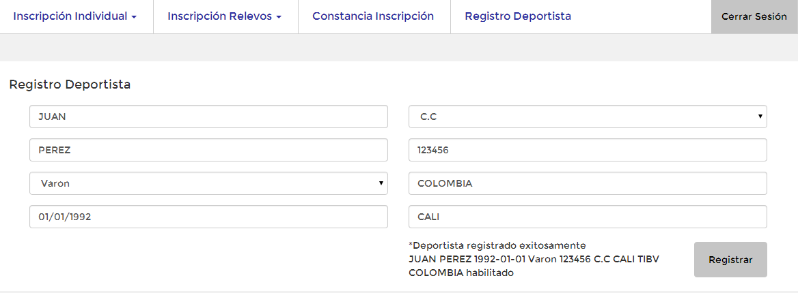

Manual de usuario para Inscripciones
Índice
Pruebas Individuales
En la sección de pruebas individuales usted podrá realizar la inscripción de sus deportistas a las pruebas individuales del torneo actual.
Tambien podrá consultar las pruebas a las que está inscrito un deportista y eliminar las inscripciones que desee.
Registro de pruebas
En esta sección, usted encontrará la lista de sus deportistas. Si no encuentra uno de sus deportistas, lo puede registrar (Ver seccion Registro deportista).

Al hacer clic en un deportista de la lista, a la derecha se desplegará una lista con las pruebas a las que el deportista seleccionado puede inscribirse.
La notación que se utiliza en la lista de pruebas es la siguiente: [orden de la prueba] [Jornada de la prueba] [Nombre de la prueba] [Categoría de la prueba]

De la lista de pruebas, usted podrá seleccionar una o más pruebas a las que desea inscribir al deportista seleccionado.
Para seleccionar varias pruebas, usted debe mantener presionada la tecla Ctrl de su teclado, y posteriormente hacer clic en las pruebas que desea

Una vez seleccionadas las pruebas a las que desea inscribir al deportista seleccionado, haga clic en el botón Registrar
El sistema le mostrará un mensaje de confirmación por cada prueba seleccionada en el mismo orden en el que están las pruebas en la lista.

Si ya había hecho la inscripción a la prueba, el sistema no hará la inscripción y mostrará un mensaje informando que no se realizó la inscripción.
Esto no impedirá la inscripción del resto de pruebas seleccionadas
Consulta de pruebas inscritas
En esta sección, usted podrá consultar las pruebas a las que están inscritos sus deportistas.
Para ir a esta sección, usted debe dar clic en la opción Inscripción Individual del menú, la cual le desplegará un sub menú, posteriormente de clic en Consultar Inscripción

En esta sección, inicialmente usted encontrará la lista de sus deportistas.
Al hacer clic en un deportista de la lista, a la derecha se desplegará una lista con las pruebas a las que el deportista seleccionado está inscrito.
De la lista de pruebas, usted podrá seleccionar una o más pruebas de las que desea desinscribir al deportista inscrito
Para seleccionar varias pruebas, usted debe mantener presionada la tecla Ctrl de su teclado, y posteriormente hacer clic en las pruebas que desea

Una vez seleccionadas las pruebas a las que desea desinscribir al deportista seleccionado, haga clic en el botón Eliminar
El sistema le mostrará un mensaje de confirmación por cada prueba seleccionada en el mismo orden en el que están la pruebas en la lista.

Pruebas de Relevo
En la sección de pruebas de relevo, usted podrá realizar la inscripción de su club a las pruebas de relevo del torneo actual.
También podrá consultar las pruebas a las que está inscrito su club y eliminar las inscripciones que desee.
Registro de pruebas
En esta seccion, usted encontrará una lista con las pruebas de relevo a las que su club puede inscribirse.
La notación que se utiliza en la lista de pruebas es la siguiente: [orden de la prueba] [Jornada de la prueba] [Nombre de la prueba] [Genero] [Categoría de la prueba]

De la lista de pruebas, usted podrá seleccionar una o más pruebas a las que desea inscribir su club.
Para seleccionar varias pruebas, usted debe mantener presionada la tecla Ctrl de su teclado, y posteriormente hacer clic en las pruebas que desea

Una vez seleccionadas las pruebas a las que desea inscribir su club, haga clic en el botón Registrar
El sistema le mostrará un mensaje de confirmación por cada prueba seleccionada en el mismo orden en el que están la pruebas en la lista.
Si ya había hecho la inscripción a la prueba, el sistema no hará la inscripción y mostrará un mensaje informando que no se realizó la inscripción.
Esto no impedirá la inscripción del resto de pruebas seleccionadas.
Consulta de pruebas inscritas
En esta sección, usted podrá consultar las pruebas de relevo a las que está inscrito su club.
Para ir a esta sección, usted debe dar clic la opción Inscripción Relevos del menú, la cual le desplegará un sub menú, posteriormente de clic en Consultar Inscripción

En esta sección, inicialmente usted encontrará una lista con las pruebas de relevo a las que su club está inscrito.
De la lista de pruebas, usted podrá una o más pruebas de las que desea desinscribir a su club.
Para seleccionar varias pruebas, usted debe mantener presionada la tecla Ctrl de su teclado, y posteriormente hacer clic en las pruebas que desea.

Una vez seleccionadas las pruebas a las que desea desinscribir su club, haga clic en el botón Eliminar
El sistema le mostrará un mensaje de confirmación por cada prueba seleccionada en el mismo orden en el que están la pruebas en la lista.
Inscripción Deportista
En la sección de Registro Deportista, usted podrá realizar la inscripción de un deportista a su club.
Para ir a esta sección, usted debe dar clic la opción Registro Deportista del menú.
Usted encontrará ocho campos que debe diligenciar. Los campos son: Nombres, Apellidos, Género, Fecha de Nacimiento, Tipo de Identificación, Nro de identificación, País y Ciudad. Los campos con asterisco (*) son obligatorios

En el campo Fecha Nacimiento el formato utilizado es el siguiente: mm/dd/yyy. Cuando da clic en este campo, se despliega un calendario del cual puede seleccionar una fecha.

Una vez diligenciados los campos, haga clic en el botón Registrar.
El sistema le mostrará un mensaje de confirmación indicándole que el deportista fue registrado exitosamente.
Si alguno de sus deportistas tiene el mismo Nro de identificación, el sistema no registrará el deportista y le mostrará un mensaje notificándolo.

Constancia Inscripción
En esta sección usted podrá consultar todas las incripciones tanto individuales como de relevo realizadas.
Tambien podrá imprimir o descargar su constancia de inscripción.
Para ir a esta sección, usted debe dar clic en la opción Constancia Inscripción del menú.
En una nueva página se abrirá el reporte de inscripción de su club.

Si desea imprimir el documento, Al final de la página, en el lado izquierdo, encontrará un enlace que dice Imprimir, de clic en él.
Se abrirá una ventana (Diferente en cada navegador) en la cual podrá seleccionar las opciones de impresión.

Si está utilizando el navegador Google Chrome, adicional puede descargar un archivo PDF de su constancia.